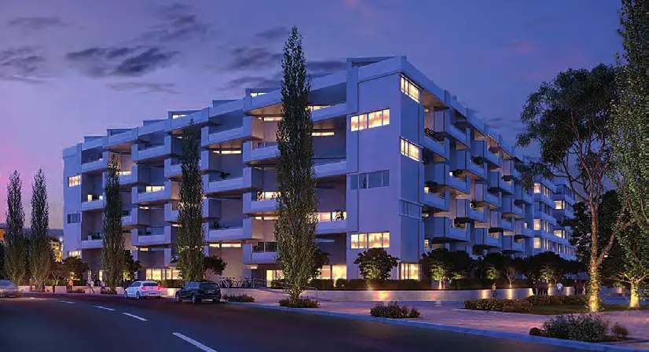
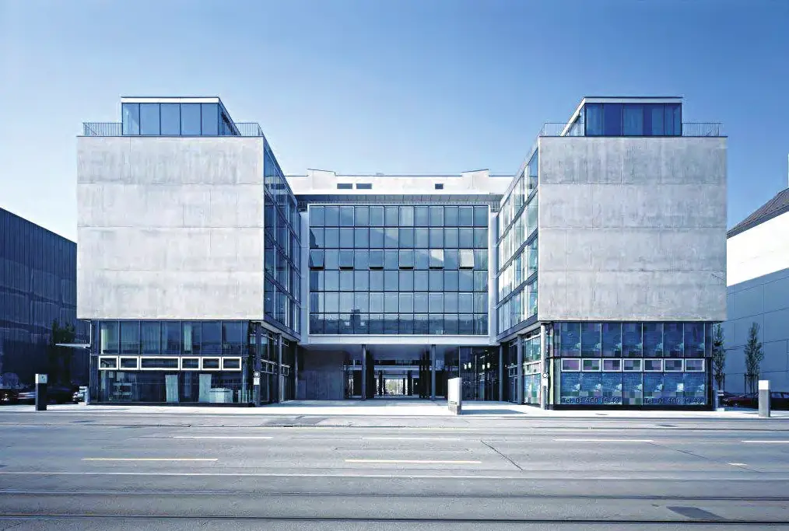

Présentation
Société du groupe Albers, présente depuis plus de 100 ans à Zurich-Ouest, développeuse et investisseuse du Hard Turm Park : une tour de 81 mètres et 23 étages avec 121 appartements en propriété, des immeubles mixtes et une dernière étape de 108 logements et de bureaux loués à SIX, livrée en 2016. Architectes : Gmür & Geschwentner.
Texte rédigé avec l'aide de l'IA à partir de l'édition imprimée du magazine. En savoir plus
Photos
Articles

Interview · texte intégralHardturm AG, Zürich – Im Gespräch mit Verwaltungsratspräsident Vincent Albers
Le Hard Turm Park à Zurich-Ouest (version anglaise incluse)

Interview · texte intégralHardturm AG, Zürich
Interview mit Vincent Albers, Verwaltungsratspräsident Hardturm AG